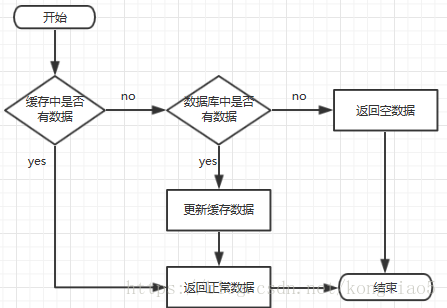
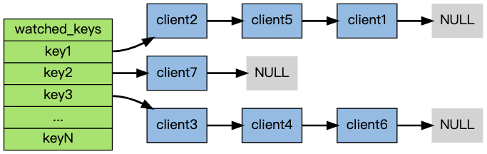

Introduce
Introduction
Redis 是一个后端开发常用的中间件，用于缓存数据库。它的全称其实是 (Remote Dictionary Server) 远程字典服务。 NoSql 数据库的一种。
为什么会引入呢？
- 分布式缓存，提高数据访问速度，分担Mysql的压力
-
因为我们平时的应用基本是都是读多写少，那么Mysql更侧重于存储，一致性，硬盘，而Redis更侧重于读取，所以可以提高效率
- 硬件角度 : Redis -> memory ,Mysql -> disk
特点:
- 键值型 ： value 支持有多种数据结构,功能丰富
- 单线程 ：每个命令都是具备原子性
- 低延迟，速度快 (基于内存(核心)，IO多路复用，良好的编码)
- 支持数据持久化
- 支持主从集群(备份)，分片集群
- 支持多语言客户端
命令
基本命令
-
KEYS: 查询所有符合模版的Key -
DEL: 删除某个指定的/某些指定的Key -
EXISTS: 判断某个Key是否存在 -
EXPIRE: 设置某个Key的过期时间,等时间到了之后，会自动删除 -
TTL: 查看某个Key的剩余时间-2: 不存在，已经过期了-1: 没有设置过期时间，说明永久有效
数据结构
值的数据结构类型
Redis的 key 值都是
string,而 value 值是支持多种数据结构的，比如常见的五种:string,Hash,List,Set,Zset（有序集合）(基本类型)
String
最大空间不能超过 512 MB 对于 val 为
String的类型，可以分成三种:
string-
int在
Redis中的int类型是以二进制数直接存储的，一个字节可以表示很大的数。但是字符串类型的话还是正常的字符串存储。 -
float
首先看一张图: 
List类型
- 消息队列
Hash类型
- 缓存对象 因为Hash有标识性的特点，可以用来存储对象，比如用户信息，商品信息等等，能让我们更快的找到这个对象。且唯一性。
- 购物车
Set类型
- 聚合运算 : 点赞，共同关注，抽奖活动...
Zset类型
运用场景: - 排序场景，排行榜，姓名电话的排序
怎么实现的呢？ 底层是通过 跳表/压缩列表
以排行榜为例:
ZADD指令，用于增加元素ZINCRBY指令，递增某个元素的值ZREVRANGE获取某个范围的元素
日志
日志是很重要的，可以帮助我们进行溯源，排查问题。一个很现实的问题就是，因为我们的 Redis 虽然是在内存中进行读写操作，但是缓存中记录的数据是很重要的，我们不能让它丢失，那么持久性的问题就是一个很重要的问题。那么日志就是一个很重要的组成了
主要的日志分成两种:
AOF日志: Append Only File,也就是刷盘操作的日志,刷盘操作的日志已经详细介绍过了。目的就是同步的将Redis中的数据及时的写入磁盘中。但是会有一定的性能损耗，尤其是对于Always这种类型的 AOF 日志。RDB日志: Redis DataBase,也就是快照的日志，将某一时刻的内存数据，以二进制的方式写入磁盘中
这里有一个很现实的问题:
我们的 AOF 日志记录是操作指令，所以会将所有的操作都进行记录下来，所以在发生故障的时候，也需要进行遍历才能恢复数据，这样明显是一种效率低下的方式。所以我们引入了 RDB 的快照日志的方式。字面意思就是 记录某一个时刻的数据。所以 RDB 快照就是记录某一个瞬间的内存数据，记录的是实际数据，而AOF记录的是命令操作的数据。我们只需要将RDB文件读入内存即可。对于 AOF 日志，虽然是最完善的，但是如果想要恢复数据，那么需要重新模拟操作一遍，才能算是恢复数据
RDB 日志的命令
-
save: 会在主线程中记录下当前内存的数据，由于执行操作命令和save都是由redis-server这个线程进行操作的，所以能保证数据的一致性。但是会阻塞住主线程，所以不适合生产环境。 -
bgsave: 后台保存，会创建一个子进程来进行保存操作，不会阻塞主线程，适合生产环境。
两种日志之间有什么优缺点呢？
-
AOF:- 优点 : 这个是最可靠的恢复方式，因为记录的是每个操作的详细情况。而且会保存到直到宕机的时候到最后一条操作，在恢复数据的时候，只需要重新执行一遍就可以了。
- 缺点 ：
- 会有一定的性能损耗，尤其是
Always这种类型的 AOF 日志。 - 而且另一个缺点也很明显，就是在恢复数据的时候，需要重新执行一遍，这样会导致恢复数据的时间会比较长。
- 会占用更多的磁盘空间，因为是每个操作都会记录下来，所以会占用更多的磁盘空间。
- 会有一定的性能损耗，尤其是
-
RDB(Redis DataBase):- 优点 :
- 损耗的磁盘空间会比较小
- 而且比较方便，只需要定期异步子线程进行保存当前内存的数据即可。
- 缺点 :
- 也正是定期进行保存的，所以如果宕机发生在两次保存之间，那么就会丢失部分数据。
- 优点 :
二者是独立的
就是一个很现实的问题，首先 RDB 肯定是会覆盖的，我们每次保存一次快照读的时候，都会覆盖上一次的快照。但是 AOF 日志是不会覆盖的。
但是，有趣的是，我们可以 Rewrite 日志，也就是说 每次让对应的键值对都保证为最新的值，因为在这之前的操作都是无效的，会自己进行覆盖，那么我们为了节省磁盘的损耗，可以选择定期的对AOF日志进行重写
Redis恢复数据的时候，是优先选择 AOF 进行恢复的，因为它是最可靠的。如果AOF日志丢失了，那么就会选择 RDB 进行恢复。
八股
Q1 什么是缓存穿透
缓存穿透是指 *在缓存和数据库中都不存在这个待找数据的情况下，但是用户在不断的发送请求。由于缓存是不命中的时候进行被动写入的，如果存储层查不到数据，就不写入缓存。所以这种情况就会失去了缓存的意义。
-> 问题所在：当流量过大的时候，DB会被直接挂掉，所以可能会出现有人刻意用不存在的数据进行攻击。这个就是缓存穿透的问题。
解决办法：
-
接口层进行校验，先筛去一部分可以明显校验出不符合规范的请求，比如 ID<0 云云，就可以避免了进行后续的检查的两步。
-
我们选择如果不存在的数据，进行插入
key:null的空值，并且设置缓存的有效时间，比如这个空值设置断点 30s,防止某个用户对同一个不存在的数据进行反复的请求。我们只需要后面一直返回null即可。
Q2 缓存击穿
是指 缓存中没有数据，但是MySql中有，这种时候由于 并发 用户特别多，同时读缓存没有读取数据，又同时去数据库取数据等情况，就会导致数据库压力过大。
->问题所在 因为频繁的查询数据库会导致数据库的压力过大，甚至会导致数据库的宕机。
解决方案
-
将热点的数据设置为 用不过期
-
接口限流，熔断与降级，对于重要的接口来进行保护，防止用户恶意刷接口
-
布隆过滤器
bloomfilter类似一个HashSet 用于快速判断某个元素是否在集合中，不存在就直接返回。- 优点 : 空间利用率和查询时间都远远超过一般的算法
- 缺点 : 有一定的误判，删除困难
-
加互斥锁，因为是同一时间对于同一个数据的并发访问，这个是最自然的想法.
1 2 3 4 5 6 7 8 9 10 11 12 13 14 15 16 17 18 19 20 21 22 23 | |
Q3 缓存雪崩
缓存雪崩，怎么理解雪崩？是指缓存中数据大批量到期过时，而查询的数据量巨大，导致数据库压力过大，甚至宕机。与缓存击穿不同的是，缓存击穿时并发查同一条数据，但是雪崩是指不同数据都过期了，很多数据都查不到从而查数据库。
解决方案 1. 给缓存的数据加随机的过期时间，也就是不让他们在相同的时间过期，防止同一时期内大量数据过期导致的数据库压力过大。
-
如果缓存数据是分布式的部署，将热点数据均匀分布到不同的缓存节点上，这样即使某个节点挂掉，也不会导致热点数据全部失效。
-
设置热点数据永不过期。
Q4 为什么会使用Redis,而不是使用Mysql来做缓存呢？
-
高性能
Redis支持高速查询，因为Redis的数据是存储在内存中的，和Mysql在磁盘上进行操作，性能要快很多，大概是10倍的差距。 -
高并发 单台设备的Redis 的 QPS (Query per Second) 可以达到 10w/s,但是Mysql的话只有 1w/s。
Q5 怎么理解 Redis 的单线程的呢？这个不是又与它支持高并发矛盾了吗？
我们常说的 Redis 是单线程，其实是指
- 接受到客户端的请求
- 解析请求
- 进行数据读写等操作
- 发送数据给客户端
以上的四个过程。但是 Redis 的程序并不是单线程的，Redis启动的时候，是会启动 后台线程(BIO)的
- 关闭文件 会单独启动一个线程来关闭文件
-
AOF 刷盘(Append Only File) 会单独启动一个线程来进行 AOF 的刷盘操作
- AOF 是Redis持久化机制的核心之一。通过记录所有写的操作命令来保证数据的持久化。将AOF 缓冲区中的数据写入磁盘，直接影响数据的安全性与性能。
- 当然，目的也很明显 防止在系统当即的时候丢失存储于缓冲区中的写数据
- 但是相比之下，有不好的点就在于，AOF操作是有内存损耗的，同时这个操作不是实时更新的，因为可能有些写的操作还只是记录在 AOF 缓冲区，但是此时系统宕机了，那么这部分的缓存数据就丢失了，需要到时候用到的时候，从Mysql的磁盘中进行及时的恢复。
- AOF 也是分成几种类型的,分别对应不同的使用场景:
always: 每次写操作都会记录到AOF文件中,对于金融等高敏感的使用场景,但是会频繁的阻塞主线程。保证了安全，但是性能会有所下降 always 是同步刷盘，而不是异步，严格的保证了安全性everysec: 每秒记录一次,异步批量写入,性能和安全的一个平衡点no: 不记录
- AOF 是Redis持久化机制的核心之一。通过记录所有写的操作命令来保证数据的持久化。将AOF 缓冲区中的数据写入磁盘，直接影响数据的安全性与性能。
-
异步释放Redis的内存，也就是
lazyFree线程。之所以需要异步的来进行内存的释放，是因为如果存在那么比较大的Key的时候，我们同步的进行释放，那么就会导致我们的主线程阻塞，所以我们需要异步的来进行释放。
其实这里 也是一个 任务队列的模型。生产者就是 创建后台任务，比如 需要 AOF 刷盘了，或者关闭文件了，抑或是需要把内存Lazy_Free了，那么就会把这些待执行的任务放入队列之中，交由 BIO 后台线程来进行处理。 世界是一个巨大的任务队列。

BIO后台线程要做的就是不断的轮询这个任务队列，然后进行任务的处理。
Redis 依旧是利用 单线程 来处理命令的执行，但是利用多线程来完成网络请求的。默认情况下 IO 多线程只针对发送响应数据(write client socket)，并不会以多线程的方式处理读请求。
所以我们可以知道的是 Redis 6.0 之后，引入了多线程的方式，也就是说会额外创建6个线程:
-
Redis-server : 主线程负责接收客户端的请求，解析请求，执行命令，返回结果
-
Redis-bio :
- 负责 AOF 的刷盘操作
- 异步处理关闭文件
- 释放内存文件
-
io_thd_1 *3 : 3个线程负责读取客户端的请求
多线程只是为了 提高网络IO的并行度，但是对于命令的执行，Redis仍然使用单线程来进行处理
Q6 怎么保证 Redis 是原子性的呢？
其实很好理解，我们从本质上出发，Redis本身就是单线程的。不存在线程安全的问题，所以 Redis 的每个命令都是原子性的。
Q6.1 那么如果让Redis保证2条指令是原子性的呢？
-
lua 脚本 : 我们可以使用 lua 脚本来进行执行.把整个Lua脚本当成一个整体执行，执行的过程不会被其他的命令打断。其实就有点像整理一个绑定的事件，看成了一个整体。
-
事务 : 如果 Redis 的事务正常执行，没有发生任何错误，那么
MULTI和EXEC之间配合起来使用，就可以保证原子性。

Redis 的事务只有在正确的前提下，才能保证原子性。Redis事务执行中如果某一个操作执行失败，就不能保证原子性了。 Redis 没有回滚机制 RollBack
-
MULTI: 就是声明了一个任务队列，来放置后续的这个事务中需要执行的命令- 开始事务 -> 此时Redis会进入一个事务的状态，后续的命令都会被放入一个队列中，等待执行，不会立即的执行
- 命令入队
- 执行事务
- 倘若出现了命令性的错误，那么在执行EXEC命令的时候，就都不进行执行操作
-
DISCARD: 取消事务，清空队列 UNWATCH: 取消WATCH命令对所有 key 的监视WATCH: 监视一个或多个 key ，如果在事务执行之前这个 key 被其他命令所改动，那么事务将被打断
Q7 你知道 watch 命令的实现原理吗？
WATCH 命令的作用:
WATCH 命令是用来监视一个或多个 key ，如果在事务执行之前这个 key 被其他命令所改动，那么事务将被打断。

其实就是很简单的一个Map(Dictionary)来进行记录了被 WATCH 的键值对，然后后面的value跟的是一个链表，表示的是这个键值对被哪些客户端监视着。
触发条件：
在任何对Key Space 进行修改命令的成功执行之后，multi.c/touchWatchedKey函数都会被调用，来查看这些命令中指明的键是否被监视，如果被监视，那么程序就会将所有监视这个/些被修改的键的客户端 的 REDIS_DIRTY_CAS 标识打开。